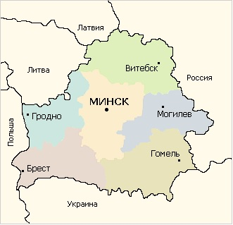

Республика Беларусь (Беларусь) расположена в восточной части Европы. На западе с ней граничит Польша, на северо–западе — Литва, на севере — Латвия, на северовостоке и востоке — Россия, на юге — Украина. Беларусь состоит их шести областей: Брестской, Витебской, Гомельской, Гродненской, Минской и Могилёвской. Столица Беларуси — город Минск, который является крупнейшим политическим, экономическим, научным и культурным центром республики. Население Минска — 1 миллион 729 тысяч человек.
| Характеристика | Описание |
|---|---|
| Территория |
составляет 207,6 тыс. км 2 . Протяженность с запада на
восток — 650 км, с севера на юг — 560 км. По размеру
территории Беларусь больше, чем, к примеру, Бельгия,
Португалия, Нидерланды, Чехия, Греция, Австрия.
|
| Население |
По предварительным данным переписи населения на 14
октября 2009 г. численность населения Республики
Беларусь составила 9 млн. 489 тыс. человек.
Женщины составляют 53, 4% населения, мужчины —
46.6%. Горожане составляют 74% населения, сельские
жители — 26%.
|
| Климат |
Умеренно–континентальный, с мягкой и влажной зимой,
теплым летом, сырой осенью. Средняя температура
января от–4°С до –8°С, июля от +17°С до +19°С.
Климатические условия благоприятны для выращивания
основных зерновых культур, овощей, плодовых деревьев
и кустарников и особенно для возделывания картофеля и
льна.
|
| Рельеф |
Преимущественно равнинно–холмистый. Средняя высота
над уровнем моря — 160 м. 45% территории занимают
сельскохозяйственные угодья, 36% — леса. В Беларуси
более 20 тысяч рек и ручьёв и около 11 тысяч озёр. Самое
крупное озеро — Нарочь (около 80 км 2 ).
|
| Охрана природы | Законодательство Беларуси определяет основные
направления экологической и природоохранной
политики страны (законы "Об охране окружающей
среды", "Об охране и использовании животного мира" и
другие). Беларусь присоединилась к Конвенции о
биоразнообразии, в соответствии с которой обязалась
создать систему охраняемых районов и активно
участвовать в решении задачи сохранения
биологического разнообразия.
В настоящее время в Беларуси имеются 3 Национальных
парка: "Беловежская пуща", "Браславские озёра" и
"Нарочанский". |
| Полезные ископаемые |
В Беларуси разведано более 4 тысяч месторождений и
залежей полезных ископаемых, около 30 видов
минерального сырья. Особое место среди них занимают
калийные соли, по промышленным запасам которых
страна занимает одно из первых мест в Европе. Запасы
каменной соли практически неисчерпаемы.
Беларусь богата нерудными полезными ископаемыми
(граниты, доломиты, известняки, мел, глины, суглинки,
песчано–гравийные материалы). Широко распространены
залежи торфа. На территории республики находятся
более 60 источников минеральных вод.
|